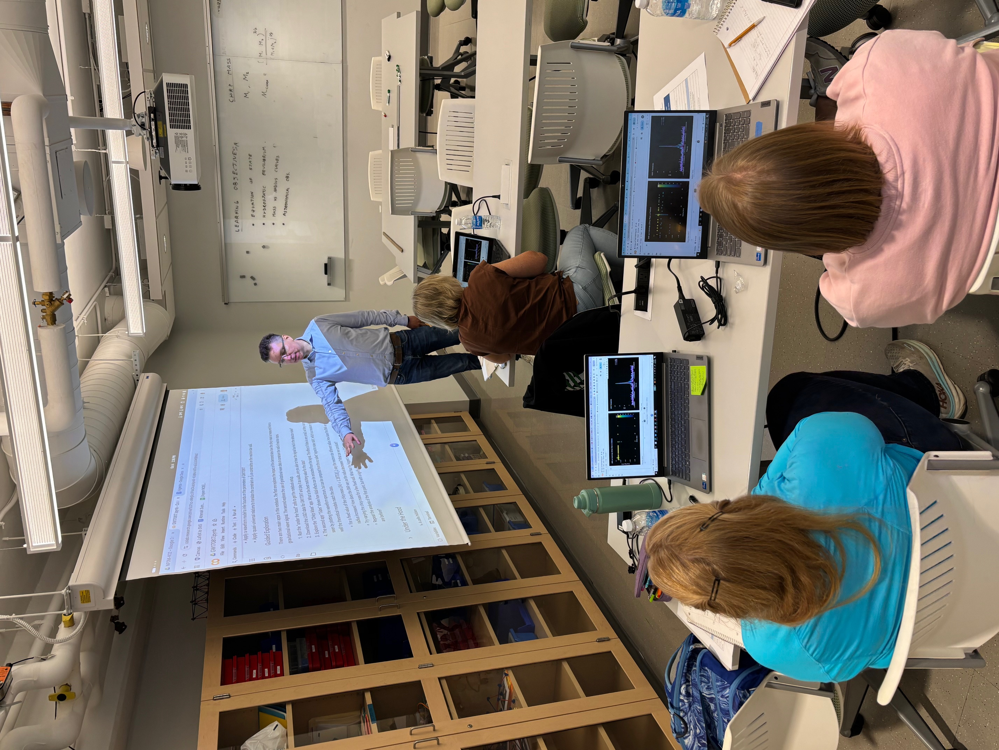
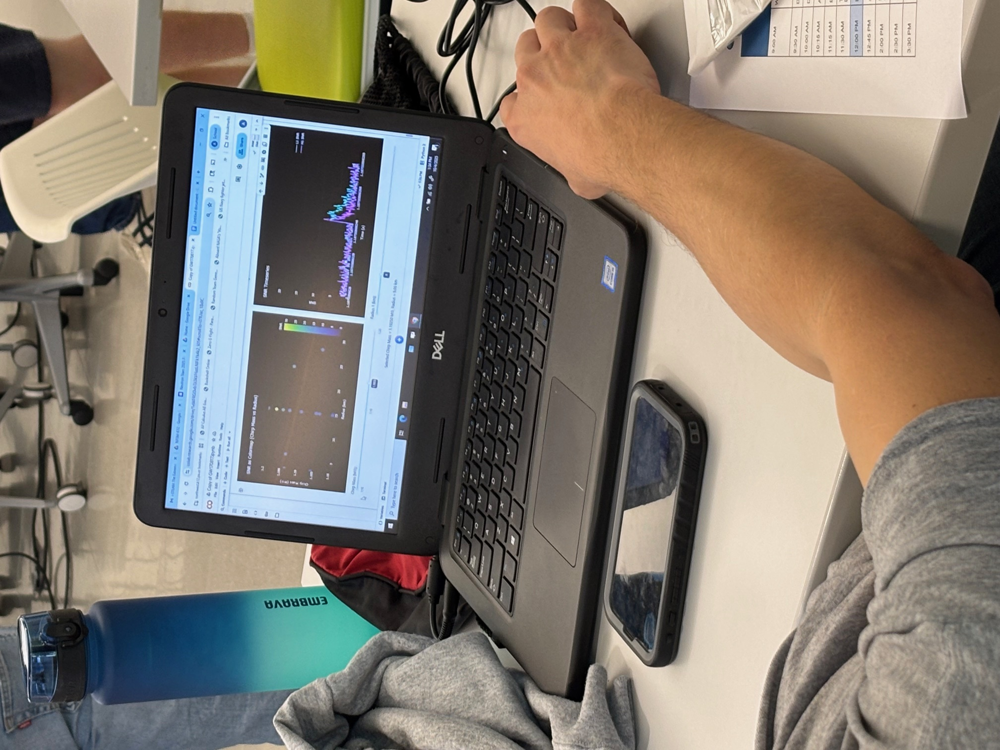

NP3M K-12 Teacher workshop
Group picture

October 4th, 2025 at the Center for Science Education (CSATS), Penn State University
The workshop consisted of an asynchronous online portion, developed by CSATS in collaboration with
NP3M fellows Peter Hammond and Lami Suleiman, and co-PI David Radice. This was followed by
an in-person workshop with talks by NP3M fellows Zidu Lin and Somdutta Ghosh,
N3AS fellow Rossella Gamba, Penn State graduate student Tristan Weaver, and a board lecture
by David Radice.
Lecturers:
Dan Bardayan (Notre Dame)
Colin Capano (Syracuse Univ.)
Veronica Dexheimer (Kent State Univ.)
Jorge Piekarewicz (Florida State Univ.)
Bangalore Sathyaprakash (Penn. State Univ.)
Lodging information for students
Lecture slides and information:
